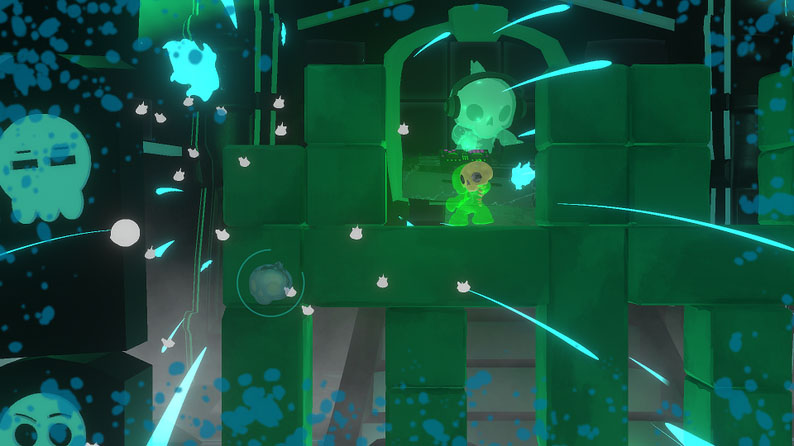
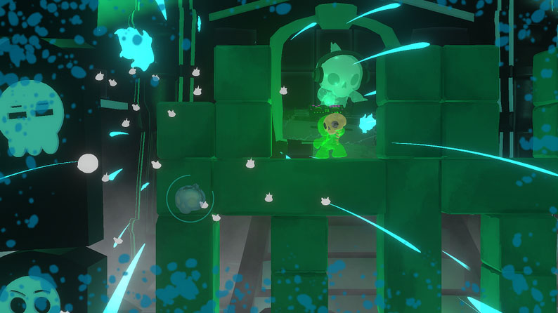
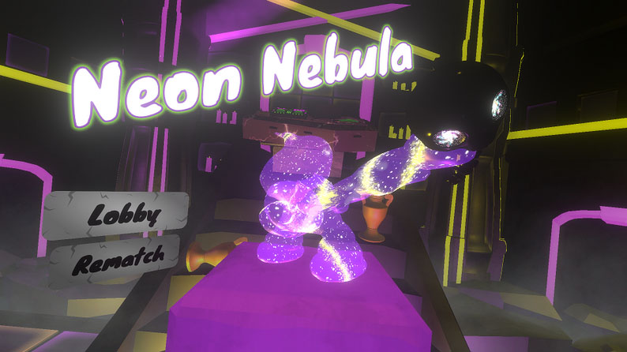
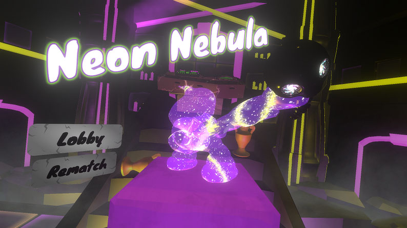

Squish is a game that I pitched and am leading for my senior capstone project as part of the UCSC game design program. It is a party game set in a collapsing mausoleum rave where players compete to be the last ghoul standing. They must dodge falling debris while also pushing rows of blocks into their opponents. Players must analyze their environment and pinpoint which blocks to push to ensure safe passage for themselves, while also ensuing as much chaos as possible on their competition.
As the lead designer, I work to facilitate that everyone on the team is able to give input about our design direction. I oversee design meetings and campaign for ideas that will introduce more dynamics regarding our core interactions of terrain manipulation while still being within our extremelly limited time table. In particular, I have been pushing the team toward focusing on new block types like the meteor block (a block that falls and destroys everything it touches) and cross bomb blocks (a timed bomb block that makes a cross like explosion similar to bomberman). By destroying groups of blocks in different patterns, these additions help to make changes in the environment more dynamic and keep the play space more varied.
As a programmer, I participate in pair programming and code reviews with my team to ensure that each of our programmers has an increased familiarity with our code base. Some of the parts of Squish that I have written code for include programming the block pushing, creating a camera that dynamically tracks action of the game and creating an AI that varies the spawn rate of the block based on the game state.

 

 
